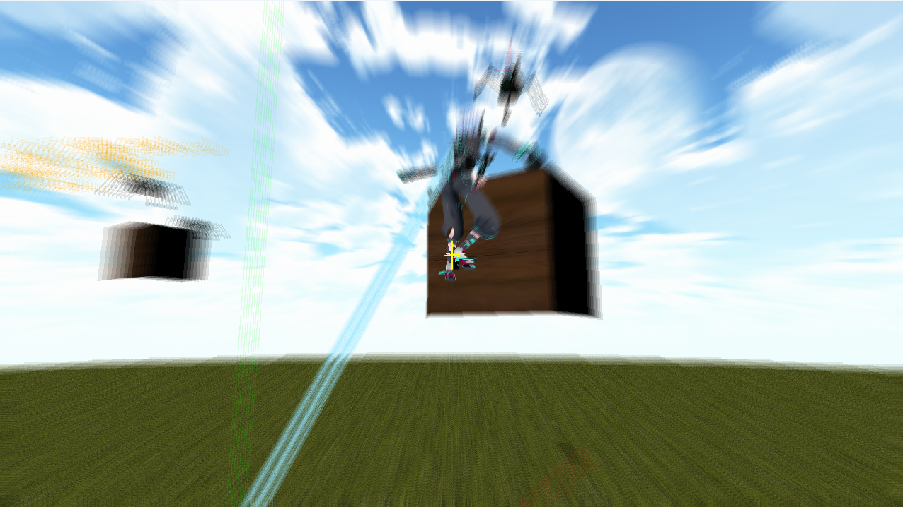

概要

ジャンル
3Dハイスピードアクションゲーム
制作期間
約2ヶ月間(2026/6/30-2026/9/8)
製作人数
1名
担当箇所
開発全般
開発環境
C++、Visual Studio、DXライブラリ
ゲームプレイ動画
どんなゲーム？
3Dフィールドを探索し、敵と戦うコマンドバトルゲームです。
フィールド上で敵に接触するとバトル画面へ切り替わり、プレイヤーが「攻撃」を選択するとバトルが開始されます。
攻撃後は、プレイヤーと敵のスピードを比較し、スピードの高いキャラクターから順番に行動します。
フィールドでの探索と、行動順を意識したコマンドバトルを組み合わせたゲームとして制作しました。
アピールポイント
ターゲットシステム
敵を自動でターゲットするシステムを実装しました。
まず、一定距離内にいる生存中の敵をターゲット候補として取得し、その中から画面中央に近い敵を優先して選択します。
また、プレイヤーと敵の間に障害物がある場合は、プレイヤーから敵までの線分と障害物の当たり判定を行い、視線が遮られている敵を候補から除外しています。
ターゲット中は現在のターゲットを維持し、ターゲットが解除された場合や対象がいなくなった場合には、候補を更新して再度ターゲットを選択するようにしました。
ターゲット候補の取得と選択処理を分離することで、選択条件を変更・追加しやすい構成にしています。
ターゲットの状態
クォータニオン
クォータニオンとは、3D空間における回転を表現するための数学的な手法です。
オイラー角で回転を扱う際に発生するジンバルロックを避けられ、複数の回転を組み合わせたり、回転を滑らかに補間したりできます。
このクォータニオンを自作し、正規化や逆クォータニオン、クォータニオン同士の乗算などの基本処理に加え、軸と角度からの回転生成、オイラー角との変換、ベクトルの回転などを実装しました。
また、キャラクターの向きを変更する処理では、現在の向きと目標の向きからクォータニオンを生成し、球面線形補間を行うことで滑らかに回転するようにしました。
カメラの回転にも使用し、ヨー角やピッチ角に応じた回転を計算しています。
シェーダー
HLSLを使用して、画面全体にモーションブラーを適用するポストエフェクトを実装しました。
画面中央から各ピクセルまでの方向を求め、その方向に沿って9か所から画像をサンプリングし、取得した色を平均することで残像を表現しています。
サンプリング位置を一定方向にずらすだけではなく、画面中央から外側へ向かう方向を利用することで、画面の中心から広がるような残像になるようにしました。
また、サンプリングする位置が画面外にはみ出す場合があるため、UV座標を0～1の範囲に収めています。
これにより、画面端でも不正な領域を参照せず、安定してエフェクトを描画できるようにしています。
攻撃時にこのモーションブラーを適用し、攻撃の動きに合わせた残像を発生させることで、スピード感や迫力を表現しました。
攻撃したときのモーションブラー
ヒットストップ＋カメラシェイク
攻撃が敵に命中した際の手応えを強調するため、ヒットストップとカメラシェイクを実装しました。
敵への攻撃が命中すると、攻撃者や対象、ダメージ量、ヒット位置などの情報をまとめて通知し、それを受け取ってヒットストップとカメラシェイクを発生させています。
ヒットストップでは一定時間ゲームの更新を停止し、攻撃が当たった瞬間を強調しています。
カメラシェイクでは、ダメージ量に応じて揺れの強さを決定し、時間経過に合わせて揺れが小さくなるようにしています。
また、揺れの計算方法を分離することで、異なる揺れ方を追加できる構成にしました。
ヒットストップ＋カメラシェイクの状態
自作エフェクト
攻撃時の演出として、複数の要素を組み合わせた自作エフェクトを実装しました。
エフェクトは、攻撃方向に伸びるスピードライン、攻撃開始から一定時間後に発生するリング、攻撃先から飛び散る火花の3種類で構成しています。
スピードラインは攻撃の移動距離に応じて長さを変化させ、リングと火花は発生するタイミングをずらすことで、攻撃の動きに合わせて段階的に演出が発生するようにしました。
リングの拡大にはイージングを使用し、一定速度ではなく時間経過に応じて広がり方を変化させています。
また、それぞれに寿命を設定して透明度を変化させ、攻撃終了時には全体をフェードアウトさせることで、自然に消えるようにしました。
攻撃した時に発生するエフェクト